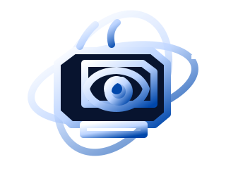

WEIRDOS 1.7
NGƯỜI DÙNG: KHÁCH
MẠNG: NỘI BỘ
--:--

Kiểm tra bộ nhớ ........... 640K OK
Ổ đĩa chính ............... C:
Ổ lưu trữ ................ D:
Phân vùng lạ .............. Z: PHÁT HIỆN
Toàn vẹn hệ thống ......... CẢNH BÁO
BẢN DỰNG NÀY KHÔNG ĐƯỢC THIẾT KẾ ĐỂ KHỞI ĐỘNG HAI LẦN.
assets/audio/startup.mp3.